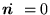
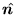
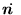
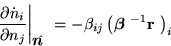
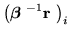

The most obvious thing about equation (1) is its
fixed point

. For this point to be biologically meaningful, all components of
must be positive, giving rise to the following inequalities:
at . The components of the derivative are given by |
(5) |
Stability of the fixed point requires that this matrix should be negative definite. Since the

are all negative by virtue of (3), each minor determinant of this matrix is equal to a minor determinant of